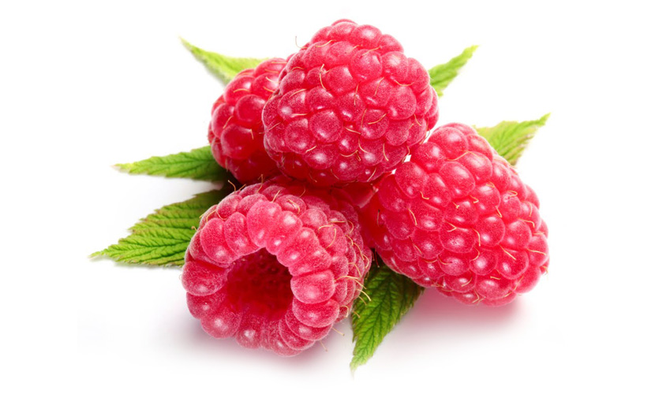
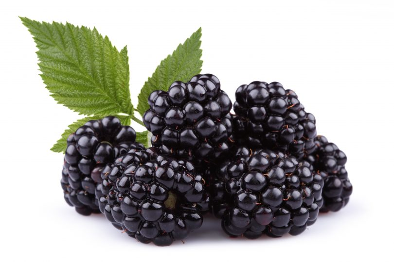
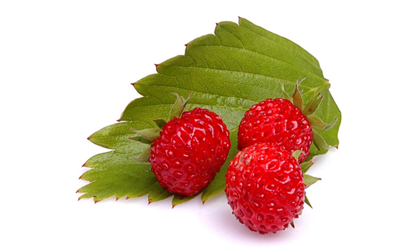
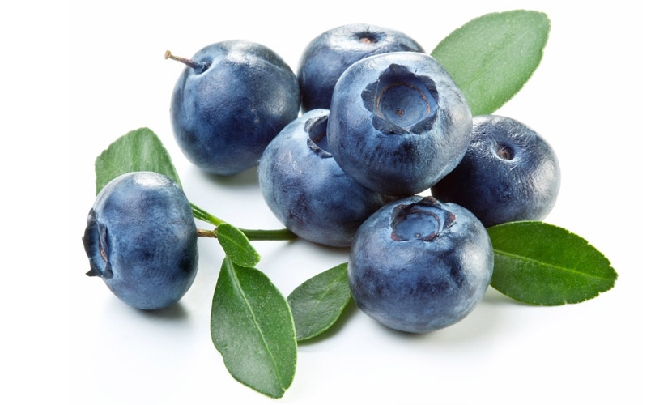

Maliny
Maliny to
owoce leśne które są równie smaczne jak poziomki i równie szybko się psują. Leśne odmiany owocują
w lipcu i sierpniu oraz mają drobne owoce. Ich uprawne kuzynki mają większe od nich owoce, a ich
zbiory trwają dłużej, aż do jesieni. Te zdrowe owoce najbardziej nadają się do bezpośredniego spożycia
i zastosowania w deserach lub z dodatkami typu bita śmietana. Ich bardzo dobry smak można zamknąć
w słoiku, robiąc z nich dżemy, soki, konfitury, galaretki i wino.
ą źródłem garbników, cukrów oraz witaminy C . Podobnie jak poziomki, można je podawać dzieciom
dopiero po ukończeniu 1. roku życia. Soki i herbaty malinowe znane są z działania napotnego. Używa
się ich przy przeziębieniach, anginach i grypie. Liście dzikiej maliny są stosowane do ziołowych
herbatek, które
regulują zaburzenia jelitowe i żołądkowe u dzieci.

Jeżyny
Jeżyna to bliska krewna maliny, nazywana jest nawet czarną maliną. Rośnie w lasach, na ich obrzeżach,
ale także przy drogach, miedzach, w zaroślach. Występuje w dwóch odmianach – czarnej i fioletowej.
O ich kolorze decydują antocyjany, czyli naturalne barwniki, które zapobiegają rozwojowi bakterii
i sprawiają, że sok z jeżyn może być pomocny przy biegunkach. Jeżyny zawierają wiele soli mineralnych
– wapń, magnez, fosfor. Mają także najwięcej potasu ze wszystkich dzikich owoców, a ten jest niezbędny
do prawidłowej pracy układu nerwowego i krwionośnego. Jeżyny są także źródłem magnezu, który korzystnie
wpływa na kondycję włosów i paznokci. Powinny być szczególnie chętnie zjadane przez kobiety, ponieważ
zawierają duże ilości „witaminy młodości”, czyli witaminy E. Możemy je znaleźć od sierpnia do października.
Jeżyny można zjadać na surowo bądź mogą być składnikiem deserów. To odpowiednie owoce na odchudzanie.
Świetnie nadają się do przetworów: soków, dżemów i konfitur. Jeśli dziecko uczulone jest na jabłko,
to nie wolno mu także podawać jeżyn, ponieważ mogą wywołać alergię krzyżową. Liście jeżyn stosowane
są przy grypie, przeziębieniach, kaszlu, katarze.

Poziomki
Lubią rosnąć w słonecznych miejscach na skrajach lasów. Można je znaleźć również na porębach i polanach.
Owocują głównie w czerwcu i lipcu. Oprócz dzikich gatunków mamy także poziomkę domową, która rośnie
na małych plantacjach i w przydomowych ogródkach. Kwitnie dłużej niż jej dzika kuzynka – można ją
zbierać od lipca do września. Poziomki najlepiej jest zjeść zaraz po zebraniu, ponieważ są bardzo
delikatne, łatwo pleśnieją i gniotą się. Są źródłem cukrów, potasu, żelaza, fosforu, wapnia, siarki
i kwasów organicznych (kwas cytrynowy, jabłkowy i niewielkie ilości kwasów salicylowego, chinowego,
winowego i szczawiowego. Wśród witamin króluje u poziomek witamina C. Poziomki najchętniej zjadamy
na surowo lub w owocowych sałatkach. Takie smakują nam najbardziej. Niemowlakom można je podawać
dopiero powyżej 1. roku życia, gdyż wcześniej mogą powodować alergię. Owoce poziomek są smaczne,
a jej liście zdrowe. Mieszanki ziołowe przygotowane z nich polecane są przy kamicy nerkowej i nieżytach
jelit, a także do płukania przy zapaleniach jamy ust i gardła. W medycynie ludowej liść poziomki
stosowano w krwawieniach z narządów rodnych i ogólnym osłabieniu u osób starszych Dietetycy polecają
poziomki jako bogate źródło żelaza, a kosmetolodzy podkreślają wspaniałe właściwości maseczki poziomkowej.
Jednak pamiętajmy, że liście poziomek z domowego ogródka nie mają takich właściwości leczniczych,
jak te dzikie.

Jagody
Czarne jagody występują w lasach i w zaroślach, zarówno na nizinach, jak i w górach. Czarne jagody powinny
być w diecie diabetyków, ponieważ zawierają m.in. wakcyninę, która działa podobnie jak insulina i
obniża poziom cukru we krwi. Świeże czarne jagody mają łagodne działanie przeczyszczające, z kolei
suszone – leczą biegunki. Sok jagodowy zwalnia ruch robaczkowy jelit, zobojętnia szkodliwe produkty
rozkładu pokarmu i zabezpiecza układ pokarmowy przed wchłanianiem toksyn. Dzięki temu zapobiega zatruciom
pokarmowym. W dużych dawkach jagody stosowane są jako środek przeciw owsikom. Niebieski barwnik antocyjanowy
tych owoców leśnych ma działanie antybakteryjne. Są źródłem sodu, wapnia, żelaza, miedzi, fosforu
i siatki, a także witamin C, B1, B2 i PP.
